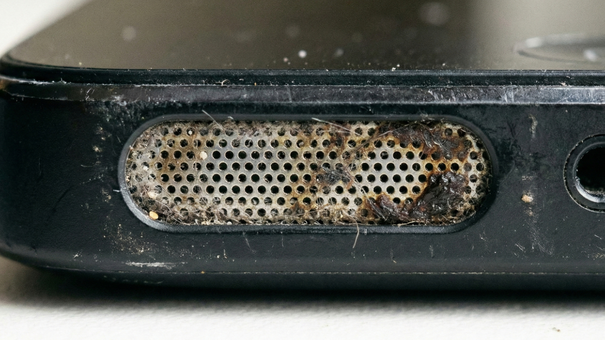
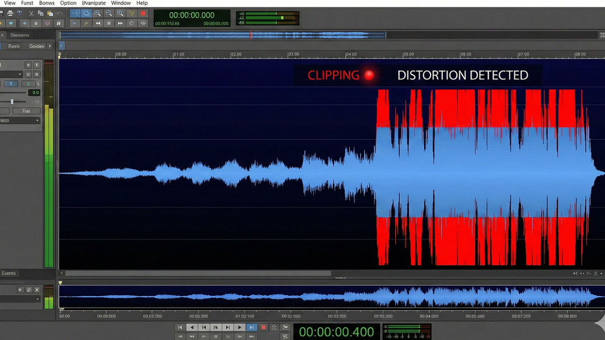

Smartphones are subjected to incredibly hostile environments. From high-humidity bathrooms and sudden drops in swimming pools to the silent, daily accumulation of metallic pocket lint, your device's acoustic hardware is constantly under attack. When audio quality degrades, the tech industry's default response is to charge you $150 for a "blown speaker" replacement.
As a web developer working remotely from cafes, beaches, and co-working spaces, I realized that 80% of perceived hardware failures are actually reversible physical blockages. The guides in this directory are the culmination of years spent testing acoustic displacement theories, reverse-engineering mobile hardware arrays, and writing clean, native Web Audio API code. This is not a list of generic tips; this is a highly technical, actively maintained knowledge base designed to help you bypass predatory repair shops and fix your own hardware safely.
When liquid enters a speaker cavity, surface tension creates a semi-solid seal that entirely dampens high-frequency audio. Time is the enemy here. The guides below detail the precise triage steps required to prevent an electrical short-circuit and exactly how to use kinetic sound waves to physically battering-ram the water out of your device.
Not all audio issues are caused by water. Sometimes, a speaker crackles due to digital clipping, and sometimes it sounds muffled due to software ghosts. Before you assume the physical voice coil is torn, utilize these diagnostic routines to isolate the exact cause of your audio degradation.
Long-term smartphone survival relies on preventative maintenance. Discover why inserting physical tools like toothpicks will destroy your IP68 waterproof membrane, and how utilizing specific waveforms (like low-frequency square waves) acts as a microscopic jackhammer to clear out hardened audio crust.